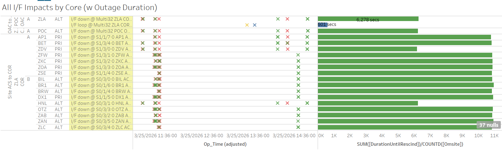

Weekly Highlights 20260318-20260325
SSM-WAAS-065 / DFO-2 Cutover Activities
SSM-WAAS-065 was released on 2/12/26 to upgrade the WAAS subsystems by performing the following hardware changes:
- Remove Legacy PCUs / Replace with new Power Distribution Units (PDUs) and DC Power Supplies (DCPS)
- Remove Legacy KVMs / Replace with new form-fit-function KVM
The DFO-2 Field Test Activities to implement limited operational capability (LOC) of L5 messaging are also being scheduled.
DFO-2 activities will be delayed...
- 3/24 20:02 - BR2 GUS TAP-B Tool Port resets due to engineers onsite
- 3/24 23:49 - BR1 GUS TAPs Tool Port resets due to engineers onsite
- 3/25 12:26 - SSM-WAAS-065 - Download W7.442 SW to BR2 GUS
- 3/25 12:59 - SSM-WAAS-065 - Download W7.442 SW to BR1 GUS
- 3/25 16:03 - SSM-WAAS-065 - BR1 GUS to Maintenance and Shutdown for hardware upgrade...
| Target Cutover Date | Site | Site Type | Outage? (Y/N) |
|---|---|---|---|
| 3/24/2026 | BR1 - Brewster (S97A) | SGS | Y |
| 3/25/2026 | BR2 - Brewster (S97B) | SGS | Y |
| 3/31/2026 | ZOA - Oakland ARTCC | WRS2 | N |
| 4/1/2026 | ZMA - Miami ARTCC | WRS2 | Y |
| 4/14/2026 | ZLA - Los Angeles ARTCC | WRS2 | N |
| 4/16/2026 | ZNY - New York City ARTCC | WRS2 | Y |
- We will not take an outage at some WRS sites to avoid service area impacts.
- While at ZMA / ZBW / ZAB, we will assist the site technicians with returning a failed Frequency Standard
- Mexico sites will require rescheduling to accommodate new shipping plans...
-
POC O&M
PDU has SEs
for
unexpected
states for
AC11-AC20
(bottom row
of outlets);
recommend
replacement
-- ref LIR
1126152724
- 3/23 14:29 - POC O&M PDU fixed AC11-AC20 unexpected states by manually cycling the outlets
| Site | Site Type | Upgrade Start | Upgrade Complete |
|---|---|---|---|
| POC - San Diego TRACON | OM | 2/19/2026 18:54 | 2/19/2026 21:28 |
| ZTL - Atlanta ARTCC | WMS / WCN | 2/19/2026 22:05 | 2/20/2026 2:02 |
| ZLA - Los Angeles ARTCC | WMS / WCN | 2/24/2026 16:24 | 2/24/2026 19:56 |
| ZDC - Washington, D.C. ARTCC | WMS / WCN | 2/26/2026 14:04 | 2/26/2026 19:26 |
| ZAU - Chicago ARTCC | WCN | 3/3/2026 14:15 | 3/3/2026 16:22 |
| NOC - Warrenton ATCSCC | OM | 3/3/2026 16:47 | 3/3/2026 19:21 |
| SZ1 - Santa Paula | SGS | 3/4/2026 17:08 | 3/4/2026 20:59 |
| CM1 - South Mountain | SGS | 3/5/2026 16:45 | 3/6/2026 3:04 |
| AP1 - Napa | SGS | 3/10/2026 15:15 | 3/10/2026 18:27 |
| DX1 - Southbury | SGS | 3/12/2026 13:06 | 3/12/2026 18:33 |
L1/L2 Bias Alarms

3/14 - OTZ WRS Power Bump
- 3/14 18:16 - OTZ all WREs
went down and came up in Maint-- ref LIR 1130368224; all WREs restored to Normal by 3/14 19:00 - 3/16 03:12 - OTZ all WREs went down and came up in Maintenance -- UPS potentially out of order; all WREs restored to Normal by 3/16 03:38
- 3/19 16:41 - OTZ WRS to No Data Reported -- power bump; all WREs restored to Normal at 3/19 17:45
- 3/21 10:19 - OTZ WRS to No Data Reported -- power bump; all WREs restored to Normal at 3/21 10:45
- 3/22 00:29 - OTZ WRS to No Data Reported -- power bump; all WREs restored to Normal at 3/22 01:10
- 3/22 20:46 - OTZ WRS to No Data Reported -- power bump; all WREs restored to Normal at 3/22 21:22
3/15 - ZSU WRE-B Power Conditioner Failing
- 3/15 23:24 - ZSU WRE-B to No Data Reported and came back up to Maintenance; restored to Normal at 3/15 23:51
- 3/17 11:10 - ZSU WRE-B to No Data Reported with PCU-B SEs 6 and 7 SNMP Comm Failures; came back up to Maintenance with SE 309 Processor Power/Fan Failure; restored to Normal at 3/17 12:07
- 3/18 08:32 - ZSU WRE-B to No Data Reported with PCU-B comm failures; came back to Maintenance at 3/18 12:35; recommended replace PCU-B; monitoring for now -- ref LIR 1131868924; restored to Normal at 3/18 15:00
- 3/23 08:47 - ZSU WRE-B to Maintenance to replace PCU -- ref LIR 1131868924...
3/20 - MMX WRE-C Receiver Failing
- 3/20 13:22 - MMX WRE-C Alarmed with SE 709 PID Alert for all C&Vs
- 3/20 15:21 - MMX WRE-C Alarmed with SE 729 WRE Bias for all C&Vs
- 3/20 18:52 - MMX WRE-C to Maintenance and Restarted; Receiver inits failing... unable to restore -- ref LIR 1133124724...
- 3/23 13:33 - MMX WRE-C alarmed with SE 306 CPU threshold exceeded when trying to copy error logs...
- 3/23 16:34 - MMX WRE-C Control Powered OFF until repair...
3/21 - FAI WRE-B Fault
- 3/21 20:53 - FAI WRE-B Faulted with SEs 28,52,53,59; Control Powered and Freq Std inits failed... unable to restore -- ref LIR 1133354124
- 3/22 07:31 - FAI WRE-B Control Powered OFF until repair...
- 3/23 16:00 - FAI returned to Maintenance mode for troubleshooting -- ref LIR 1133354124; replaced Freq Std and Receiver; restored to Normal at 3/23 23:41
3/24 - SZ1 GUS Alarmed with L1/L5 Signal Quality Degraded
- 3/24 04:00 - SZ1 GUS alarmed with SEs 133/134 L1/L5 Sig Quality Degraded Fault clearing after ~4 seconds -- GEO 131 to NOT MON; UDREI back to 11 at 3/24 04:18
Various Comm Impacts
* Only captures major / long-term comm outages
CM1 Comms
- 3/18 07:16 - CM1 Ring 2 ALT comms flapping; last event cleared at 3/18 08:57 (~3618 seconds total)
- 3/18 07:16 - CM1 Ring 2 ALT comms flapping; last event cleared at 3/18 08:57 (~3618 seconds total)
- 3/18 18:21 - CM1 Ring 2 ALT comms flapping; last event cleared at 3/18 19:43 (~278 seconds total)
- 3/20 09:24 - CM1 Ring 2 ALT comms flapping; last event cleared at 3/20 11:36 (~2075 seconds total)
- 3/20 15:29 - CM1 Ring 2 ALT comms flapping; last event cleared at 3/20 17:06 (~1566 seconds total)
- 3/23 09:42 - CM1 Ring 2 ALT comms flapping; last event cleared at 3/23 10:04 (~246 seconds total)
Other Sites
- 3/17 14:51 - MTP Ring 1 + MMD Ring 1 comms down
hard --
fiber cut; both lines cleared at 3/18 03:39 (~46023 seconds) - 3/18 07:13 - CDB Ring 2 comms down hard; line cleared at 3/18 07:38 (~1485 seconds)
- 3/20 03:11 - MPR Ring 1 comms down hard -- OFFLINE; line cleared at 3/20 05:12 (~7195 seconds)
- 3/24 11:09 - YFB Ring 2 + CM1 Ring 1 ALT / Ring 2 PRI comms down hard; all lines cleared at 3/24 11:16 (~371 seconds)
- 3/24 15:47 - ZSU Ring 1 PRI / Ring 2 ALT comms down hard; both lines cleared at 3/24 15:52 (~358 seconds)
- 3/24 17:30 - BR1 Ring 1 PRI / Ring 2 ALT comms
down hard...
- 3/24 18:43 - BR1 Ring 2 ALT comms cleared (~4389 seconds)
- 3/24 20:18 - BR1 Ring 1 PRI comms cleared (~10118 seconds)
- 3/24 18:23 - CDB Ring 2 comms down hard; line cleared at 3/24 18:26 (~143 seconds)
- 3/24 18:36 - BR2 Ring 1 PRI / Ring 2 ALT comms down hard; both lines cleared at 3/24 20:23 (~6433 seconds)
- 3/25 08:39 - YFB Ring 2 + CM1 Ring 1 ALT / Ring 2 PRI comms down hard; all lines cleared at 3/25 08:36 (~461 seconds)
- 3/25 11:33 - Multiple comm impacts at ZLA
affecting both Ring 1 / Ring 2 networks; down
hard at 3/25 11:40...
- 3/25 14:14 - Some comms restored (~9240 seconds), but down hard again at 3/25 14:27...
- 3/25 14:41 - Most comm impacts cleared (~10799 seconds)
- 3/25 14:53 - Remaining comm impacts cleared (~1524 seconds)

- 3/25 17:21 - Multiple comm impacts at ZLA affecting both Ring 1 / Ring 2 networks; lines cleared at 3/25 17:41 (~1112 seconds)
- 3/25 17:44 - Multiple comm impacts at ZLA affecting both Ring 1 / Ring 2 networks; lines cleared at 3/25 17:51 (~215 seconds)
3/17/26 YYR Ring 1 Comms
ISR 0317-1687 ZAU<->YYR Net 1 down.
-- ref LIR
1131824324
- 3/17 07:31 - YYR Ring 1 + YFB Ring 1 comms down hard; both lines cleared at 3/17 07:36 (~327 seconds)
- 3/17 07:57 - YYR Ring 1 + YFB Ring 1 comms
down hard...
- 3/17 08:50 - YFB Ring 1 comms looped and back up to flapping; last event cleared at 3/17 08:57 (~3426 seconds total)
- 3/17 09:55 - YYR Ring 1 comms looped; loop cleared at 3/17 10:04 but comms still down hard...
- 3/18 -
FTI line is good. NAVCAN/GG advised.
5/11/23 Mexico Ring 2 Down Hard...
- 5/11/23 17:01 - MX Ring 2 SatCom upgrade begins; MX Ring 2 OFFLINE until upgrade troubleshooting is complete...
- Targeting network upgrade in CY26
Disconnect order -- will cancel MX Ring 2 circuits from ZLA to Tijuana on 3/12/26
List of current offline WREs
List of current offline WREs -- ref WAAS Status Monitor
All Depot shipments to Mexico are halted until the customs process can be finalized
Currently working to assess MX Inventory to determine equipment refresh and restoration needs...
- MMD WRE-C - 10/20/25-... - Good Freq Std swapped into WRE-A to restore -- ref LIR 211505621
- MTP WRE-A - 9/23/25-...
- PCU Failed after power outage; PCU-B swapped
into WRE-A but DC output is non-functional...
ref LAD
1060696524
- Planning to swap PCU-C into WRE-A -- this will remove WRE-C from service, but allow us to restore WRE-A for analysis
- MTP WRE-B - 11/18/24-... - Receiver inits failing due to no DC Power from PCU; PCU swapped with PCU-A after PCU-A failed -- ref LIR 898330924
- MPR WRE-B - 5/3/24-... - Inits failing -- looks like a bad freq std; due to shipping issues, there is no spare Freq Std and no ETA to recover WRE-B... -- ref LIR 44170821

Major Events


Core I/F Status

Comm Events

Mexico Comm Status